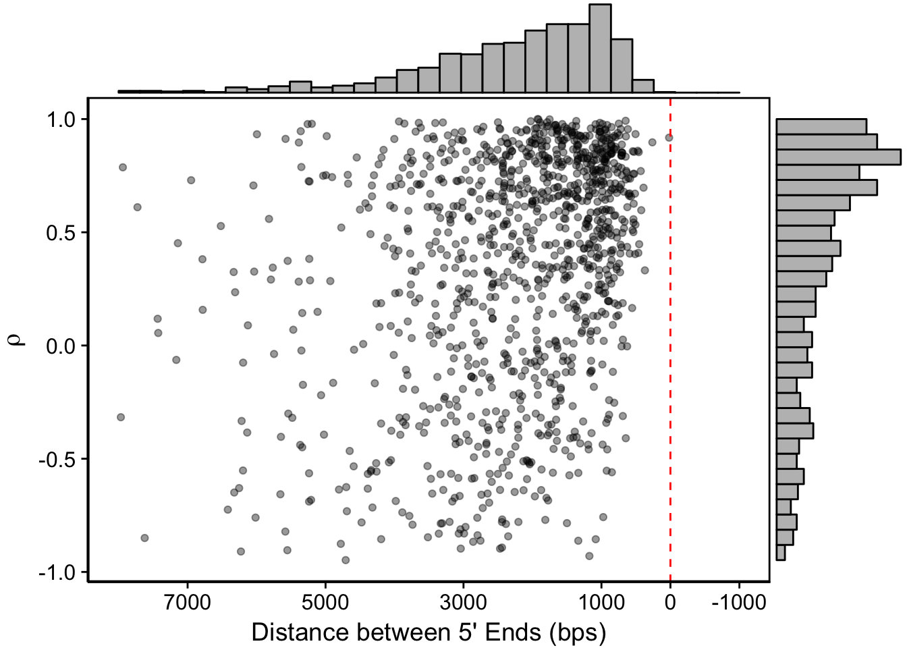
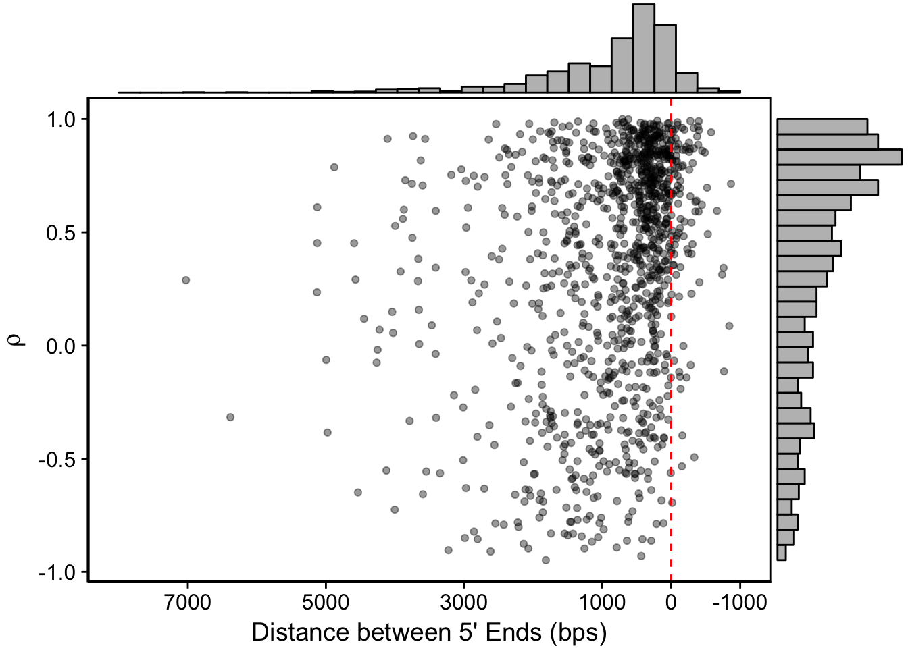
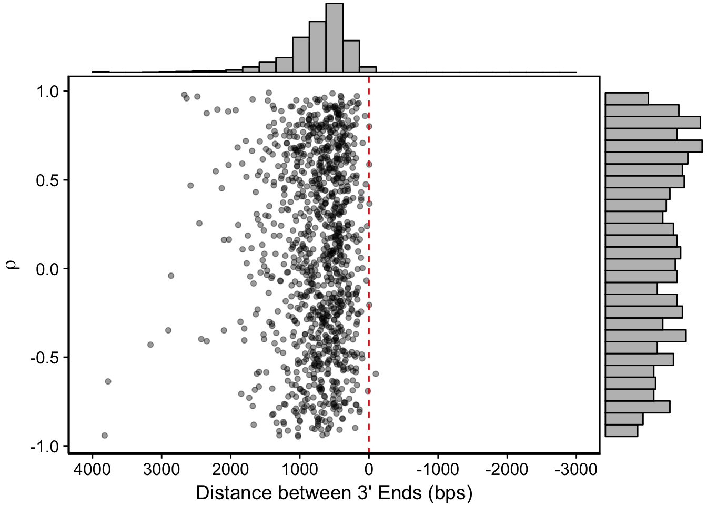
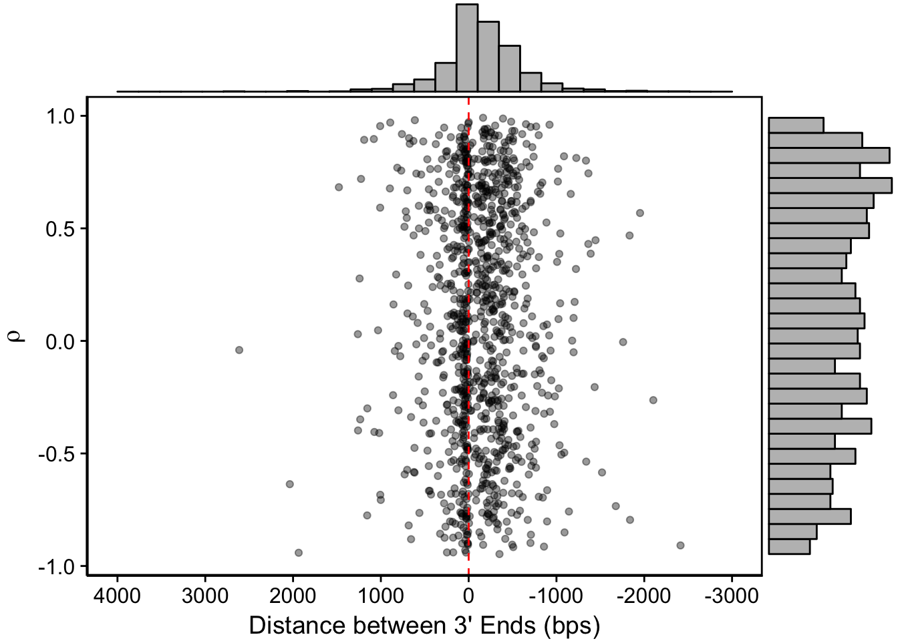
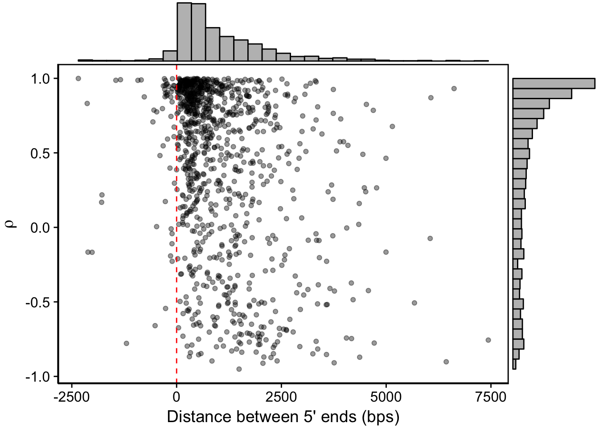
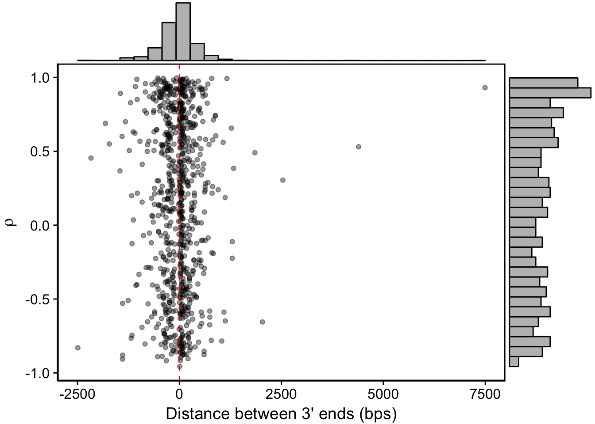
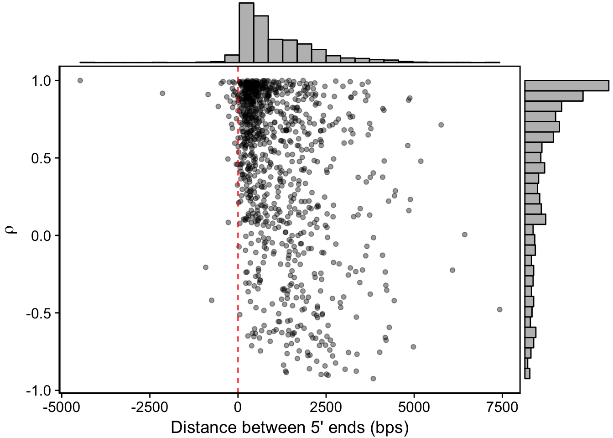
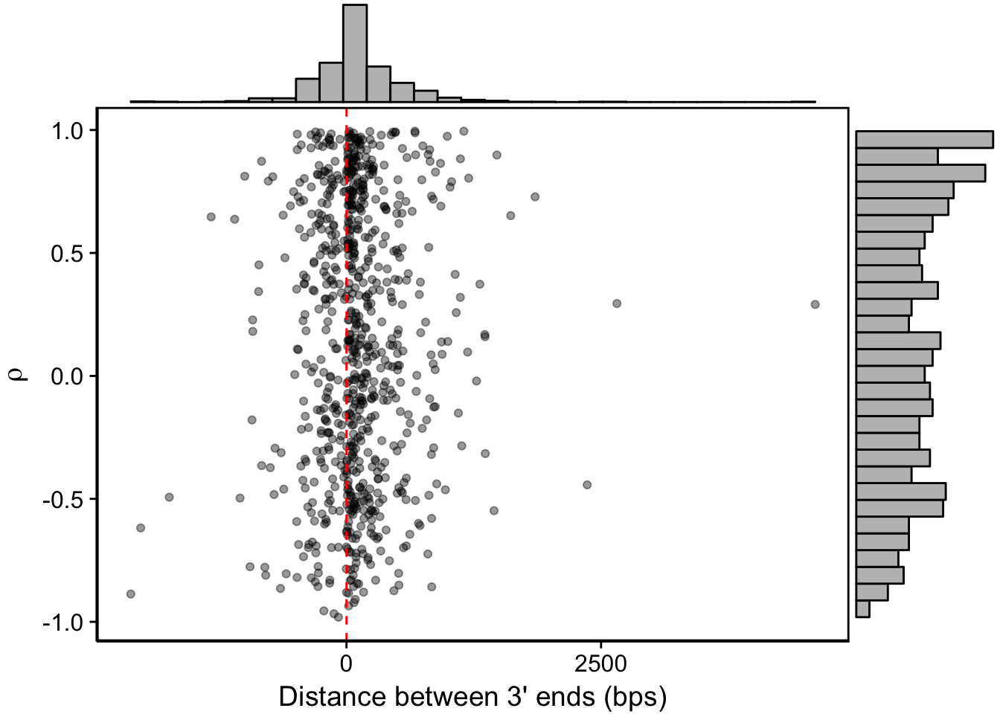

Last updated: 2017-03-30
Code version: 0e2e80a
What is the relationship between the distances between neighboring genes and their co-expression? Can we identify putative bidirectional promoters this way? Are convergent neighboring genes that overlap more likely to be expressed at different time points?
To stay consistent, we’ll first generate the non-UTR transcripts:
cat data/annotations/exons_nuclear_3D7_v24.gff | \
gffread -F -E -o- | \
awk '$3 == "transcript" {split($9,x,";"); gsub("rna_","",x[1]); gsub("-1","",x[1]); print $1,$2,$3,$4,$5,$6,$7,$8,x[1]}' > \
output/neighboring_genes/transcripts_without_utrs.gffBefore we generate the full transcripts we need to manually go into output/neighboring_genes/transcripts_without_utrs.gff and remove transcript isoforms. We only want to keep the largest transcript isoform for each gene.
Then we’ll run the same command, but include the UTR predictions and generate “full” transcripts:
for strain in 3d7 hb3 it; do
cat output/neighboring_genes/transcripts_without_utrs.gff output/final_utrs/final_utrs_${strain}.gff | \
gffread -E -F -o- -O | \
awk '$3 == "transcript"{print $0}' > output/neighboring_genes/full_transcripts_${strain}.gff
doneFirst we’ll calculate the distances between the non-UTR containing transcripts:
python code/neighboring_genes/find_neighboring_genes.py \
-g output/neighboring_genes/transcripts_without_utrs.gff \
-p output/neighboring_genes/non_utr \
-i output/neighboring_genes/genes_to_ignore.txt And calculate the distances when we consider the full transcript lengths with UTRs:
x3d7gff <- tibble::as_tibble(import.gff("../output/neighboring_genes/full_transcripts_3d7.gff"))
xhb3gff <- tibble::as_tibble(import.gff("../output/neighboring_genes/full_transcripts_hb3.gff"))
xitgff <- tibble::as_tibble(import.gff("../output/neighboring_genes/full_transcripts_it.gff"))
convergent <- read_tsv("../output/neighboring_genes/non_utr_convergent.tsv")
divergent <- read_tsv("../output/neighboring_genes/non_utr_divergent.tsv")
tandem <- read_tsv("../output/neighboring_genes/non_utr_tandem.tsv")
calc_distances <- function(neighboring,gff) {
# generate empty tibble
ti <- tibble(left_gene=character(),right_gene=character(),dist=integer())
# go through each gene pair
# calculate the distance
# start position of right gene minus end position of left gene
for (i in 1:nrow(neighboring)) {
ti <- dplyr::bind_rows(ti,
tibble(
left_gene = neighboring[i,]$left_gene,
right_gene = neighboring[i,]$right_gene,
dist = gff[gff$ID == neighboring[i,]$right_gene,]$start - gff[gff$ID == neighboring[i,]$left_gene,]$end
))
}
# give it back!
return(ti)
}
# for 3D7
x3d7_convergent <- calc_distances(convergent,x3d7gff)
x3d7_divergent <- calc_distances(divergent,x3d7gff)
x3d7_tandem <- calc_distances(tandem,x3d7gff)
# for HB3
xhb3_convergent <- calc_distances(convergent,xhb3gff)
xhb3_divergent <- calc_distances(divergent,xhb3gff)
xhb3_tandem <- calc_distances(tandem,xhb3gff)
# for IT
xit_convergent <- calc_distances(convergent,xitgff)
xit_divergent <- calc_distances(divergent,xitgff)
xit_tandem <- calc_distances(tandem,xitgff)Now we’ll import the gene expression abundances and calculate correlations between them all. However, there are a few caveats: we have UTR predictions for genes, not transcripts, meaning we’ll need to reduce the transcript caluclations to gene abundances. We’ll keep it simple and just use the isoform with the highest TPM for each gene with multiple isoforms.
We’ll first do this for 3D7:
# Function to keep only the most highly expressed isoforms for calculating correlations
#
reduce_to_genes <- function(abund) {
max_isoforms <- abund %>%
filter(stringr::str_count(transcript_id,"[.]")>0) %>%
group_by(transcript_id) %>%
summarise(total=sum(TPM)) %>%
mutate(id=stringr::str_replace(transcript_id,"[.][0-9]","")) %>%
group_by(id) %>%
summarise(max_isoform=which.max(total))
isoforms_to_keep <- abund %>%
filter(stringr::str_count(transcript_id,"[.]")>0) %>%
rowwise %>%
mutate(isoform=as.integer(stringr::str_split(transcript_id,"[.]")[[1]][2])) %>%
mutate(id=stringr::str_replace(transcript_id,"[.][0-9]","")) %>%
inner_join(max_isoforms) %>%
filter(max_isoform==isoform) %$%
unique(transcript_id)
genes_to_keep <- abund %>%
filter(stringr::str_count(transcript_id,"[.]")==0) %$%
unique(transcript_id)
x3d7_abund <- abund %>%
filter(transcript_id %in% c(isoforms_to_keep,genes_to_keep)) %>%
mutate(gene_id=stringr::str_replace(transcript_id,"[.][0-9]","")) %>%
select(gene_id,TPM,strain,tp)
}
x3d7_abund <- readRDS("../output/transcript_abundance/stringtie_3d7_abund.rds")
xhb3_abund <- readRDS("../output/transcript_abundance/stringtie_hb3_abund.rds")
xit_abund <- readRDS("../output/transcript_abundance/stringtie_it_abund.rds")
x3d7_abund <- reduce_to_genes(x3d7_abund)
xhb3_abund <- reduce_to_genes(xhb3_abund)
xit_abund <- reduce_to_genes(xit_abund)Now we can actually calculate the correlations between every gene and every other gene:
calc_correlations <- function(abund,neighboring) {
df <- abund %>%
dplyr::select(gene_id,TPM,tp) %>%
tidyr::spread(tp,TPM)
c <- cor(t(df[,2:8]))
rownames(c) <- df$gene_id
colnames(c) <- df$gene_id
new <- tibble(left_gene=character(),
right_gene=character(),
dist=integer(),
cor=double())
for (i in 1:nrow(neighboring)) {
new <- dplyr::bind_rows(new,
tibble(
left_gene=neighboring[i,]$left_gene,
right_gene=neighboring[i,]$right_gene,
dist=neighboring[i,]$dist,
cor=c[neighboring[i,]$left_gene,neighboring[i,]$right_gene]
))
}
return(new)
}
# for non UTR genes
convergent <- calc_correlations(x3d7_abund,convergent)
divergent <- calc_correlations(x3d7_abund,divergent)
tandem <- calc_correlations(x3d7_abund,tandem)
# for 3D7
x3d7_convergent <- calc_correlations(x3d7_abund,x3d7_convergent)
x3d7_divergent <- calc_correlations(x3d7_abund,x3d7_divergent)
x3d7_tandem <- calc_correlations(x3d7_abund,x3d7_tandem)
# for HB3
xhb3_convergent <- calc_correlations(xhb3_abund,xhb3_convergent)
xhb3_divergent <- calc_correlations(xhb3_abund,xhb3_divergent)
xhb3_tandem <- calc_correlations(xhb3_abund,xhb3_tandem)
# for IT
xit_convergent <- calc_correlations(xit_abund,xit_convergent)
xit_divergent <- calc_correlations(xit_abund,xit_divergent)
xit_tandem <- calc_correlations(xit_abund,xit_tandem)And finally, let’s write that to a file:
# for non UTR genes
write_tsv(x=convergent,path="../output/neighboring_genes/non_utr_convergent.tsv")
write_tsv(x=divergent,path="../output/neighboring_genes/non_utr_divergent.tsv")
write_tsv(x=tandem,path="../output/neighboring_genes/non_utr_tandem.tsv")
# for 3D7
write_tsv(x=x3d7_convergent,path="../output/neighboring_genes/3d7_convergent.tsv")
write_tsv(x=x3d7_divergent,path="../output/neighboring_genes/3d7_divergent.tsv")
write_tsv(x=x3d7_tandem,path="../output/neighboring_genes/3d7_tandem.tsv")
# for HB3
write_tsv(x=xhb3_convergent,path="../output/neighboring_genes/hb3_convergent.tsv")
write_tsv(x=xhb3_divergent,path="../output/neighboring_genes/hb3_divergent.tsv")
write_tsv(x=xhb3_tandem,path="../output/neighboring_genes/hb3_tandem.tsv")
# for IT
write_tsv(x=xit_convergent,path="../output/neighboring_genes/it_convergent.tsv")
write_tsv(x=xit_divergent,path="../output/neighboring_genes/it_divergent.tsv")
write_tsv(x=xit_tandem,path="../output/neighboring_genes/it_tandem.tsv")Let’s make some plots of the before and after picture of distance between genes and their correlation to one another. Before we do this we need to actually generate the data we care about. We need to calculate the neighboring genes and the distances beween those genes. Then we can import that data, calculate the correlations between those neighboring genes, and create a gene-by-gene table of neighboring genes, the distances between them, their orientations, and the correlations between their expression patterns.
Should we remove genes for which we don’t have UTR predictions?
We also want to filter out genes for which we have no 5’ or 3’ UTR predictions
utrs_3d7 <- as_tibble(import.gff3("../output/final_utrs/final_utrs_3d7.gff"))
utrs_3d7$Parent <- unlist(utrs_3d7$Parent)
utrs_hb3 <- as_tibble(import.gff3("../output/final_utrs/final_utrs_hb3.gff"))
utrs_hb3$Parent <- unlist(utrs_hb3$Parent)
utrs_it <- as_tibble(import.gff3("../output/final_utrs/final_utrs_it.gff"))
utrs_it$Parent <- unlist(utrs_it$Parent)First we can make 3D7 plots. We can look at the before and after shots:
g <- divergent %>%
filter(left_gene %in% utrs_3d7[utrs_3d7$type == "5UTR",]$Parent &
right_gene %in% utrs_3d7[utrs_3d7$type == "5UTR",]$Parent) %>%
ggplot(aes(x=dist,y=cor)) +
geom_point(alpha=0.4) +
panel_border(colour="black",size=1) +
ylab(expression(rho)) +
xlab("Distance between 5' Ends (bps)") +
scale_x_reverse(limits=c(8000,-1000),breaks=c(7000,5000,3000,1000,0,-1000)) +
geom_vline(xintercept=0,linetype=2,col="red")
g <- ggExtra::ggMarginal(g, type = "histogram")
print(g)
ggsave(plot=g,filename="../output/neighboring_genes/non_utr_headhead.pdf")headhead_3d7 <- x3d7_divergent %>%
filter(left_gene %in% utrs_3d7[utrs_3d7$type == "5UTR",]$Parent &
right_gene %in% utrs_3d7[utrs_3d7$type == "5UTR",]$Parent) %>%
ggplot(aes(x=dist,y=cor)) +
geom_point(alpha=0.4) +
panel_border(colour="black",size=1) +
ylab(expression(rho)) +
xlab("Distance between 5' Ends (bps)") +
scale_x_reverse(limits=c(8000,-1000),breaks=c(7000,5000,3000,1000,0,-1000)) +
geom_vline(xintercept=0,linetype=2,col="red")
headhead_3d7 <- ggExtra::ggMarginal(headhead_3d7, type = "histogram")
print(headhead_3d7)
ggsave(plot=headhead_3d7,filename="../output/neighboring_genes/3d7_headhead.pdf")g <- convergent %>%
filter(left_gene %in% utrs_3d7[utrs_3d7$type == "3UTR",]$Parent &
right_gene %in% utrs_3d7[utrs_3d7$type == "3UTR",]$Parent) %>%
ggplot(aes(x=dist,y=cor)) +
geom_point(alpha=0.4) +
panel_border(colour="black",size=1) +
ylab(expression(rho)) +
xlab("Distance between 3' Ends (bps)") +
scale_x_reverse(limits=c(4000,-3000),breaks=c(4000,3000,2000,1000,0,-1000,-2000,-3000)) +
geom_vline(xintercept=0,linetype=2,col="red")
g <- ggExtra::ggMarginal(g, type = "histogram")
print(g)
ggsave(plot=g,filename="../output/neighboring_genes/non_utr_tailtail.pdf")tailtail_3d7 <- x3d7_convergent %>%
filter(left_gene %in% utrs_3d7[utrs_3d7$type == "3UTR",]$Parent &
right_gene %in% utrs_3d7[utrs_3d7$type == "3UTR",]$Parent) %>%
ggplot(aes(x=dist,y=cor)) +
geom_point(alpha=0.4) +
panel_border(colour="black",size=1) +
ylab(expression(rho)) +
xlab("Distance between 3' Ends (bps)") +
scale_x_reverse(limits=c(4000,-3000),breaks=c(4000,3000,2000,1000,0,-1000,-2000,-3000)) +
geom_vline(xintercept=0,linetype=2,col="red")
tailtail_3d7 <- ggExtra::ggMarginal(tailtail_3d7, type = "histogram")
print(tailtail_3d7)
ggsave(plot=tailtail_3d7,filename="../output/neighboring_genes/3d7_tailtail.pdf")Then we can make the HB3 plots:
headhead_hb3 <- xhb3_divergent %>%
filter(left_gene %in% utrs_hb3[utrs_hb3$type == "5UTR",]$Parent &
right_gene %in% utrs_hb3[utrs_hb3$type == "5UTR",]$Parent) %>%
ggplot(aes(x=dist,y=cor)) +
geom_point(alpha=0.4) +
panel_border(colour="black",size=1) +
ylab(expression(rho)) +
xlab("Distance between 5' ends (bps)") +
geom_vline(xintercept=0,linetype=2,col="red")
headhead_hb3 <- ggExtra::ggMarginal(headhead_hb3, type = "histogram")
print(headhead_hb3)
ggsave(plot=headhead_hb3,filename="../output/neighboring_genes/hb3_headhead.pdf")tailtail_hb3 <- xhb3_convergent %>%
filter(left_gene %in% utrs_hb3[utrs_hb3$type == "3UTR",]$Parent &
right_gene %in% utrs_hb3[utrs_hb3$type == "3UTR",]$Parent) %>%
ggplot(aes(x=dist,y=cor)) +
geom_point(alpha=0.4) +
panel_border(colour="black",size=1) +
ylab(expression(rho)) +
xlab("Distance between 3' ends (bps)") +
geom_vline(xintercept=0,linetype=2,col="red")
tailtail_hb3 <- ggExtra::ggMarginal(tailtail_hb3, type = "histogram")
print(tailtail_hb3)
ggsave(plot=tailtail_hb3,filename="../output/neighboring_genes/hb3_tailtail.pdf")And finally for IT:
headhead_it <- xit_divergent %>%
filter(left_gene %in% utrs_it[utrs_it$type == "5UTR",]$Parent &
right_gene %in% utrs_it[utrs_it$type == "5UTR",]$Parent) %>%
ggplot(aes(x=dist,y=cor)) +
geom_point(alpha=0.4) +
panel_border(colour="black",size=1) +
ylab(expression(rho)) +
xlab("Distance between 5' ends (bps)") +
geom_vline(xintercept=0,linetype=2,col="red")
headhead_it <- ggExtra::ggMarginal(headhead_it, type = "histogram")
print(headhead_it)
ggsave(plot=headhead_it,filename="../output/neighboring_genes/it_headhead.pdf")tailtail_it <- xit_convergent %>%
filter(left_gene %in% utrs_it[utrs_it$type == "3UTR",]$Parent &
right_gene %in% utrs_it[utrs_it$type == "3UTR",]$Parent) %>%
ggplot(aes(x=dist,y=cor)) +
geom_point(alpha=0.4) +
panel_border(colour="black",size=1) +
ylab(expression(rho)) +
xlab("Distance between 3' ends (bps)") +
geom_vline(xintercept=0,linetype=2,col="red")
tailtail_it <- ggExtra::ggMarginal(tailtail_it, type = "histogram")
print(tailtail_it)
ggsave(plot=tailtail_it,filename="../output/neighboring_genes/it_tailtail.pdf")sessionInfo()R version 3.3.2 (2016-10-31)
Platform: x86_64-apple-darwin15.6.0 (64-bit)
Running under: OS X El Capitan 10.11.6
locale:
[1] en_US.UTF-8/en_US.UTF-8/en_US.UTF-8/C/en_US.UTF-8/en_US.UTF-8
attached base packages:
[1] parallel stats4 stats graphics grDevices utils datasets
[8] methods base
other attached packages:
[1] scales_0.4.1 cowplot_0.7.0 magrittr_1.5
[4] stringr_1.2.0 dplyr_0.5.0 purrr_0.2.2
[7] readr_1.0.0 tidyr_0.6.1 tibble_1.2
[10] ggplot2_2.2.1 tidyverse_1.1.1 rtracklayer_1.34.2
[13] GenomicRanges_1.26.3 GenomeInfoDb_1.10.3 IRanges_2.8.1
[16] S4Vectors_0.12.1 BiocGenerics_0.20.0
loaded via a namespace (and not attached):
[1] Rcpp_0.12.9 lubridate_1.6.0
[3] lattice_0.20-34 Rsamtools_1.26.1
[5] Biostrings_2.42.1 assertthat_0.1
[7] rprojroot_1.2 digest_0.6.12
[9] psych_1.6.12 mime_0.5
[11] R6_2.2.0 plyr_1.8.4
[13] backports_1.0.5 evaluate_0.10
[15] httr_1.2.1 zlibbioc_1.20.0
[17] lazyeval_0.2.0 readxl_0.1.1
[19] miniUI_0.1.1 Matrix_1.2-8
[21] rmarkdown_1.3 labeling_0.3
[23] BiocParallel_1.8.1 foreign_0.8-67
[25] RCurl_1.95-4.8 munsell_0.4.3
[27] shiny_1.0.0 broom_0.4.2
[29] httpuv_1.3.3 modelr_0.1.0
[31] mnormt_1.5-5 htmltools_0.3.5
[33] SummarizedExperiment_1.4.0 workflowr_0.3.0
[35] XML_3.98-1.5 GenomicAlignments_1.10.0
[37] bitops_1.0-6 grid_3.3.2
[39] xtable_1.8-2 nlme_3.1-131
[41] jsonlite_1.3 gtable_0.2.0
[43] DBI_0.5-1 git2r_0.18.0
[45] stringi_1.1.2 XVector_0.14.0
[47] reshape2_1.4.2 xml2_1.1.1
[49] tools_3.3.2 forcats_0.2.0
[51] Biobase_2.34.0 hms_0.3
[53] yaml_2.1.14 colorspace_1.3-2
[55] rvest_0.3.2 ggExtra_0.6
[57] knitr_1.15.1 haven_1.0.0 This R Markdown site was created with workflowr